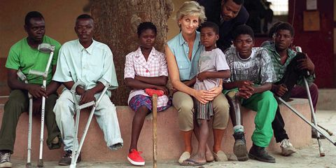

Diana married Prince Charles, the heir apparent to the British throne, in 1981. She became an international icon and used her celebrity to raise awareness for a number of causes, from leprosy to domestic violence to mental health .
Not only did she raise millions of dollars for many causes benefiting the sick and the poor, but she also gave of her time and herself. Many examples exist of Diana's personal visits to homeless shelters and leprosy wards, of her physically touching those with HIV/AIDS or sitting with children dying of cancer.
Although after her divorce Diana pulled out of being patroness or president over 100 social institutions and charitable organizations, she took her role as patron of the English National Ballet, the Leprosy Mission and the British AIDS Help seriously. As well as these she remained president of the children's hospital Great Ormond Street and the Royal Marsden Hospital. To the many accolades which were given to Diana, belong the acceptance as Honorary Citizen of Northampton (1989) and the "Prize for Humanity".
Diana: "The worst illness of our time is that so many people have to suffer from not ever being loved."